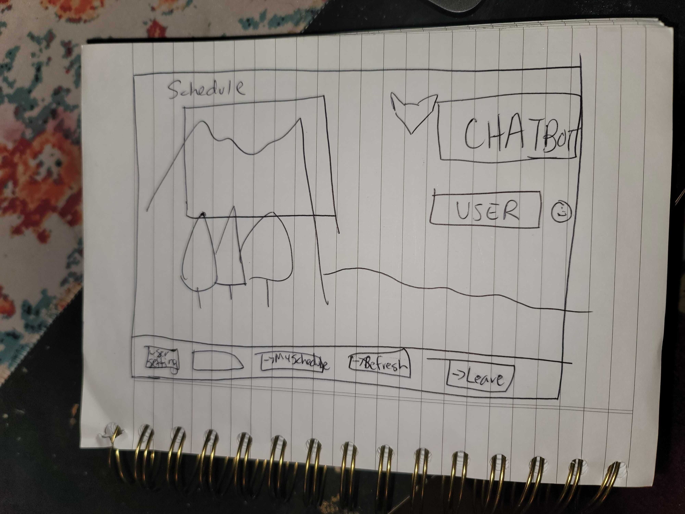
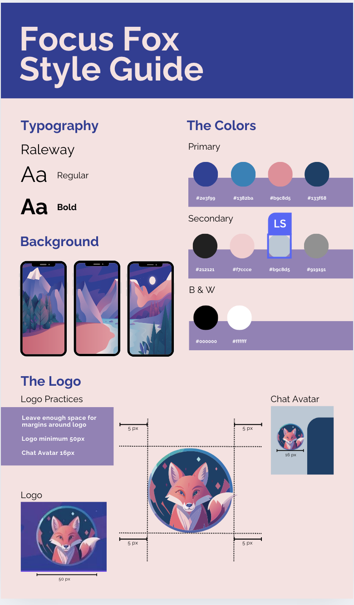
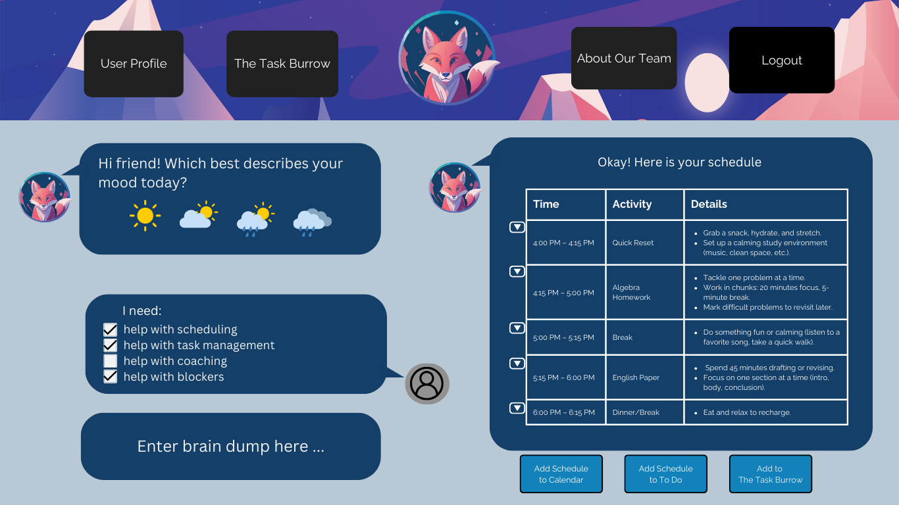
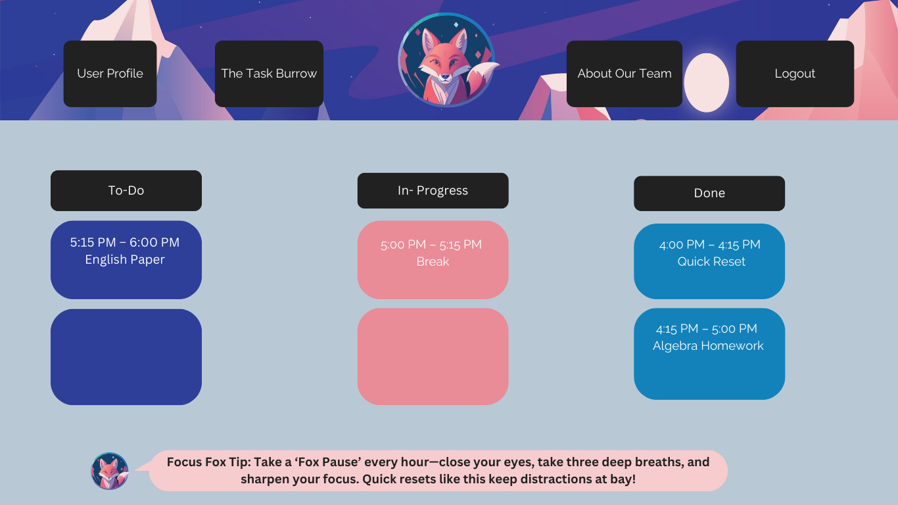

Focus Fox Behind the Scenes
Developing the layout for the Focus Fox app

Before wireframes were created, a quick sketch for how the UI would look was created.

Next we created a style guide and branding guide to have a cohesive product identity.

